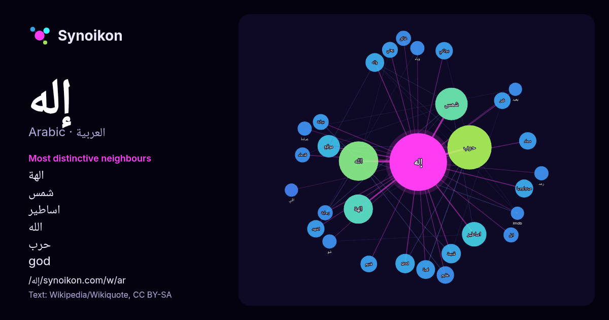

العربية · كلمة شائعة
إله
“god” · الكلمات الموجودة حولها في 594 ورودًا من ويكيبيديا, Wikiquote.

الجيران الأكثر تميّزًا
- الهة 29×
- شمس 23×
- اساطير 22×
- الله 20×
- حرب 20×
- god 16×
- واله 15×
- ميثولوجيا 13×
- اشهد 13×
- يوناني 11×
- عظيم 11×
- ديانة 9.8×
- سماء 9.7×
- رماية 9.6×
- خالق 9.6×
- ايل 9.5×
- قدماء 9.3×
- قمر 8.8×
- لعبة 8.8×
- موقع 8.8×
× = كم مرة أكثر مما في نصوص ويكيبيديا العامة.
الجيران الأكثر تكرارًا
- حرب 78
- الله 62
- شمس 42
- الهة 34
- اساطير 24
- موقع 20
- اسم 19
- god 15
- قديمة 15
- لعبة 14
- معلومات 14
- واله 14
- رئيسي 13
- ميثولوجيا 13
- اشهد 12
- سماء 12
- عبد 12
- عظيم 12
- يوناني 12
- ارض 11
في السياق
- الإله إلى الذي يملك القدرة المطلقة على الإعطاء، أي واهب الحياة والرزق والقادر على سلبه، وبعض الأديان تقسم الوظائف والقدرة على أكثر من إله، فهذا إله للمطر Wikipedia snippets · إله
- إله المجرزة (الإنجليزية: God of Carnage) (الفرنسية: Le Dieu du carnage) هي مسرحية كوميدية فرنسية من تأليف ياسمينا رضا وتم البدأ في عرضها في سنة 2006، Wikipedia snippets · إله المجزرة
- بعنوان إله الحرب. إذا وصلت لهذه الصفحة عبر وصلة داخليّة، فضلا غيّر تلك الوصلة لتقود مباشرة إلى المقالة المعنيّة. قد يقصد من «إله الحرب» : إله الحرب (دي Wikipedia snippets · إله الحرب (توضيح)
- يُفهم أن أتوم إله نور. وبصفته الشمس، لا يزال يحمل الحياة الأرضية في داخله عند شروقه الأول. منه، ومن خلال الانفصال، نشأ الجنسان الإلهيان: شو، إله الهواء، وتفنوت، Wikipedia snippets · أتوم (إله)
- اطلع عليه بتاريخ 2017-06-08. إله الحرب في بوكس أوفيس موجو إله الحرب في قاعدة بيانات الأفلام على الإنترنت (بالإنجليزية) إله الحرب في موقع Rottentomatoes Wikipedia snippets · إله الحرب (فلم)
- إيل (أو إل، بالعبرية: אל؛ بالسريانية: ܐܝܠ؛ بالإنكليزية: ʼĒl أو ʼIl) هي كلمة سامية شمالية غربية تعني «إله» أو «رب»، أو تشير (اسمَ علم) إلى أحد آلهة الشرق Wikipedia snippets · إيل (إله)
- هليوبوليس. كان إله السلام والأسود والهواء والريح. أقدم أسطورة تتعلق بالإله شو تشير إلى أنه وأخته الإلهة تفنوت (الإنجليزية: Tefnut) ولدا من مني الإله أتوم أو Wikipedia snippets · شو (إله)
- إله الزراعة والموتى، ارتبطت قصته بالحصاد السنوي واختفاء أي حياة مرئية في المحصول. وبالتالي، في هذه المرحلة، كان نبري يُعتبر مجرد جانب من أوزير، إله أكثر Wikipedia snippets · نبري (إله)
كلمات أخرى
- أغنية
- تاريخ
- جبل
- جرس
- جزيرة
- جسر
- حديقة
- حصان
- حقيقة
- حياة
- خبز
- خريطة
- خريف
- ذهب
- زمن
- ساعة
- شاي
- شتاء
- صحة
- صحراء
- صمت
- صيف
- طبيعة
- طريق
- طعام
- ظل
- عائلة
- عاصفة
- عسل
- علم
- عمل
- غابة
- فن
- قطار
- قطة
- قلب
- قوة
- كلب
- لغة
- ماء
- مال
- مدينة
- مرآة
- مطر
- ملح
- مناخ
- موت
- نجم
- والدة
حُسبت مسبقًا في 2026-10-09 بالإعدادات الافتراضية (±5 كلمات، مدوّنة متوسطة). يمكن للخريطة التفاعلية تحديثها ببيانات حية.
واجهة مترجمة آليًا؛ نرحب بالتصحيحات.